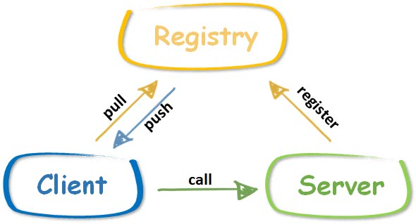

动手写RPC框架 - GeeRPC第七天 服务发现与注册中心(registry)
7天用 Go语言/golang 从零实现 RPC 框架 GeeRPC 教程(7 days implement golang remote procedure call framework from scratch tutorial)，动手写 RPC 框架，参照 golang 标准库 net/rpc 的实现，实现了服务端(server)、支…

本文是7天用Go从零实现RPC框架GeeRPC的第七篇。
- 实现一个简单的注册中心，支持服务注册、接收心跳等功能
- 客户端实现基于注册中心的服务发现机制，代码约 250 行
注册中心的位置

注册中心的位置如上图所示。注册中心的好处在于，客户端和服务端都只需要感知注册中心的存在，而无需感知对方的存在。更具体一些：
- 服务端启动后，向注册中心发送注册消息，注册中心得知该服务已经启动，处于可用状态。一般来说，服务端还需要定期向注册中心发送心跳，证明自己还活着。
- 客户端向注册中心询问，当前哪天服务是可用的，注册中心将可用的服务列表返回客户端。
- 客户端根据注册中心得到的服务列表，选择其中一个发起调用。
如果没有注册中心，就像 GeeRPC 第六天实现的一样，客户端需要硬编码服务端的地址，而且没有机制保证服务端是否处于可用状态。当然注册中心的功能还有很多，比如配置的动态同步、通知机制等。比较常用的注册中心有 etcd、zookeeper、consul，一般比较出名的微服务或者 RPC 框架，这些主流的注册中心都是支持的。
Gee Registry
主流的注册中心 etcd、zookeeper 等功能强大，与这类注册中心的对接代码量是比较大的，需要实现的接口很多。GeeRPC 选择自己实现一个简单的支持心跳保活的注册中心。
GeeRegistry 的代码独立放置在子目录 registry 中。
首先定义 GeeRegistry 结构体，默认超时时间设置为 5 min，也就是说，任何注册的服务超过 5 min，即视为不可用状态。
day7-registry/registry/registry.go
// GeeRegistry is a simple register center, provide following functions.
// add a server and receive heartbeat to keep it alive.
// returns all alive servers and delete dead servers sync simultaneously.
type GeeRegistry struct {
timeout time.Duration
mu sync.Mutex // protect following
servers map[string]*ServerItem
}
type ServerItem struct {
Addr string
start time.Time
}
const (
defaultPath = "/_geerpc_/registry"
defaultTimeout = time.Minute * 5
)
// New create a registry instance with timeout setting
func New(timeout time.Duration) *GeeRegistry {
return &GeeRegistry{
servers: make(map[string]*ServerItem),
timeout: timeout,
}
}
var DefaultGeeRegister = New(defaultTimeout)
为 GeeRegistry 实现添加服务实例和返回服务列表的方法。
- putServer：添加服务实例，如果服务已经存在，则更新 start。
- aliveServers：返回可用的服务列表，如果存在超时的服务，则删除。
func (r *GeeRegistry) putServer(addr string) {
r.mu.Lock()
defer r.mu.Unlock()
s := r.servers[addr]
if s == nil {
r.servers[addr] = &ServerItem{Addr: addr, start: time.Now()}
} else {
s.start = time.Now() // if exists, update start time to keep alive
}
}
func (r *GeeRegistry) aliveServers() []string {
r.mu.Lock()
defer r.mu.Unlock()
var alive []string
for addr, s := range r.servers {
if r.timeout == 0 || s.start.Add(r.timeout).After(time.Now()) {
alive = append(alive, addr)
} else {
delete(r.servers, addr)
}
}
sort.Strings(alive)
return alive
}
为了实现上的简单，GeeRegistry 采用 HTTP 协议提供服务，且所有的有用信息都承载在 HTTP Header 中。
- Get：返回所有可用的服务列表，通过自定义字段 X-Geerpc-Servers 承载。
- Post：添加服务实例或发送心跳，通过自定义字段 X-Geerpc-Server 承载。
// Runs at /_geerpc_/registry
func (r *GeeRegistry) ServeHTTP(w http.ResponseWriter, req *http.Request) {
switch req.Method {
case "GET":
// keep it simple, server is in req.Header
w.Header().Set("X-Geerpc-Servers", strings.Join(r.aliveServers(), ","))
case "POST":
// keep it simple, server is in req.Header
addr := req.Header.Get("X-Geerpc-Server")
if addr == "" {
w.WriteHeader(http.StatusInternalServerError)
return
}
r.putServer(addr)
default:
w.WriteHeader(http.StatusMethodNotAllowed)
}
}
// HandleHTTP registers an HTTP handler for GeeRegistry messages on registryPath
func (r *GeeRegistry) HandleHTTP(registryPath string) {
http.Handle(registryPath, r)
log.Println("rpc registry path:", registryPath)
}
func HandleHTTP() {
DefaultGeeRegister.HandleHTTP(defaultPath)
}
另外，提供 Heartbeat 方法，便于服务启动时定时向注册中心发送心跳，默认周期比注册中心设置的过期时间少 1 min。
// Heartbeat send a heartbeat message every once in a while
// it's a helper function for a server to register or send heartbeat
func Heartbeat(registry, addr string, duration time.Duration) {
if duration == 0 {
// make sure there is enough time to send heart beat
// before it's removed from registry
duration = defaultTimeout - time.Duration(1)*time.Minute
}
var err error
err = sendHeartbeat(registry, addr)
go func() {
t := time.NewTicker(duration)
for err == nil {
<-t.C
err = sendHeartbeat(registry, addr)
}
}()
}
func sendHeartbeat(registry, addr string) error {
log.Println(addr, "send heart beat to registry", registry)
httpClient := &http.Client{}
req, _ := http.NewRequest("POST", registry, nil)
req.Header.Set("X-Geerpc-Server", addr)
if _, err := httpClient.Do(req); err != nil {
log.Println("rpc server: heart beat err:", err)
return err
}
return nil
}
GeeRegistryDiscovery
在 xclient 中对应实现 Discovery。
day7-registry/xclient/discovery_gee.go
package xclient
type GeeRegistryDiscovery struct {
*MultiServersDiscovery
registry string
timeout time.Duration
lastUpdate time.Time
}
const defaultUpdateTimeout = time.Second * 10
func NewGeeRegistryDiscovery(registerAddr string, timeout time.Duration) *GeeRegistryDiscovery {
if timeout == 0 {
timeout = defaultUpdateTimeout
}
d := &GeeRegistryDiscovery{
MultiServersDiscovery: NewMultiServerDiscovery(make([]string, 0)),
registry: registerAddr,
timeout: timeout,
}
return d
}
- GeeRegistryDiscovery 嵌套了 MultiServersDiscovery，很多能力可以复用。
- registry 即注册中心的地址
- timeout 服务列表的过期时间
- lastUpdate 是代表最后从注册中心更新服务列表的时间，默认 10s 过期，即 10s 之后，需要从注册中心更新新的列表。
实现 Update 和 Refresh 方法，超时重新获取的逻辑在 Refresh 中实现：
func (d *GeeRegistryDiscovery) Update(servers []string) error {
d.mu.Lock()
defer d.mu.Unlock()
d.servers = servers
d.lastUpdate = time.Now()
return nil
}
func (d *GeeRegistryDiscovery) Refresh() error {
d.mu.Lock()
defer d.mu.Unlock()
if d.lastUpdate.Add(d.timeout).After(time.Now()) {
return nil
}
log.Println("rpc registry: refresh servers from registry", d.registry)
resp, err := http.Get(d.registry)
if err != nil {
log.Println("rpc registry refresh err:", err)
return err
}
servers := strings.Split(resp.Header.Get("X-Geerpc-Servers"), ",")
d.servers = make([]string, 0, len(servers))
for _, server := range servers {
if strings.TrimSpace(server) != "" {
d.servers = append(d.servers, strings.TrimSpace(server))
}
}
d.lastUpdate = time.Now()
return nil
}
Get 和 GetAll 与 MultiServersDiscovery 相似，唯一的不同在于，GeeRegistryDiscovery 需要先调用 Refresh 确保服务列表没有过期。
func (d *GeeRegistryDiscovery) Get(mode SelectMode) (string, error) {
if err := d.Refresh(); err != nil {
return "", err
}
return d.MultiServersDiscovery.Get(mode)
}
func (d *GeeRegistryDiscovery) GetAll() ([]string, error) {
if err := d.Refresh(); err != nil {
return nil, err
}
return d.MultiServersDiscovery.GetAll()
}
Demo
最后，依旧通过简单的 Demo 验证今天的成果。
添加函数 startRegistry，稍微修改 startServer，添加调用注册中心的 Heartbeat 方法的逻辑，定期向注册中心发送心跳保活。
func startRegistry(wg *sync.WaitGroup) {
l, _ := net.Listen("tcp", ":9999")
registry.HandleHTTP()
wg.Done()
_ = http.Serve(l, nil)
}
func startServer(registryAddr string, wg *sync.WaitGroup) {
var foo Foo
l, _ := net.Listen("tcp", ":0")
server := geerpc.NewServer()
_ = server.Register(&foo)
registry.Heartbeat(registryAddr, "tcp@"+l.Addr().String(), 0)
wg.Done()
server.Accept(l)
}
接下来，将 call 和 broadcast 的 MultiServersDiscovery 替换为 GeeRegistryDiscovery，不再需要硬编码服务列表。
func call(registry string) {
d := xclient.NewGeeRegistryDiscovery(registry, 0)
xc := xclient.NewXClient(d, xclient.RandomSelect, nil)
defer func() { _ = xc.Close() }()
// send request & receive response
var wg sync.WaitGroup
for i := 0; i < 5; i++ {
wg.Add(1)
go func(i int) {
defer wg.Done()
foo(xc, context.Background(), "call", "Foo.Sum", &Args{Num1: i, Num2: i * i})
}(i)
}
wg.Wait()
}
func broadcast(registry string) {
d := xclient.NewGeeRegistryDiscovery(registry, 0)
xc := xclient.NewXClient(d, xclient.RandomSelect, nil)
defer func() { _ = xc.Close() }()
var wg sync.WaitGroup
for i := 0; i < 5; i++ {
wg.Add(1)
go func(i int) {
defer wg.Done()
foo(xc, context.Background(), "broadcast", "Foo.Sum", &Args{Num1: i, Num2: i * i})
// expect 2 - 5 timeout
ctx, _ := context.WithTimeout(context.Background(), time.Second*2)
foo(xc, ctx, "broadcast", "Foo.Sleep", &Args{Num1: i, Num2: i * i})
}(i)
}
wg.Wait()
}
最后在 main 函数中，将所有的逻辑串联起来，确保注册中心启动后，再启动 RPC 服务端，最后客户端远程调用。
func main() {
log.SetFlags(0)
registryAddr := "http://localhost:9999/_geerpc_/registry"
var wg sync.WaitGroup
wg.Add(1)
go startRegistry(&wg)
wg.Wait()
time.Sleep(time.Second)
wg.Add(2)
go startServer(registryAddr, &wg)
go startServer(registryAddr, &wg)
wg.Wait()
time.Sleep(time.Second)
call(registryAddr)
broadcast(registryAddr)
}
运行结果如下：
rpc registry path: /_geerpc_/registry
rpc server: register Foo.Sleep
rpc server: register Foo.Sum
tcp@[::]:56276 send heart beat to registry http://localhost:9999/_geerpc_/registry
rpc server: register Foo.Sleep
rpc server: register Foo.Sum
tcp@[::]:56277 send heart beat to registry http://localhost:9999/_geerpc_/registry
rpc registry: refresh servers from registry http://localhost:9999/_geerpc_/registry
call Foo.Sum success: 3 + 9 = 12
call Foo.Sum success: 4 + 16 = 20
call Foo.Sum success: 1 + 1 = 2
call Foo.Sum success: 0 + 0 = 0
call Foo.Sum success: 2 + 4 = 6
rpc registry: refresh servers from registry http://localhost:9999/_geerpc_/registry
broadcast Foo.Sum success: 4 + 16 = 20
broadcast Foo.Sum success: 1 + 1 = 2
broadcast Foo.Sum success: 3 + 9 = 12
broadcast Foo.Sum success: 0 + 0 = 0
broadcast Foo.Sum success: 2 + 4 = 6
broadcast Foo.Sleep success: 0 + 0 = 0
broadcast Foo.Sleep success: 1 + 1 = 2
broadcast Foo.Sleep error: rpc client: call failed: context deadline exceeded
broadcast Foo.Sleep error: rpc client: call failed: context deadline exceeded
broadcast Foo.Sleep error: rpc client: call failed: context deadline exceeded
到这里，七天用 Go 从零实现 RPC 框架的教程也结束了。我们用七天时间参照 golang 标准库 net/rpc，实现了服务端以及支持并发的客户端，并且支持选择不同的序列化与反序列化方式；为了防止服务挂死，在其中一些关键部分添加了超时处理机制；支持 TCP、Unix、HTTP 等多种传输协议；支持多种负载均衡模式，最后还实现了一个简易的服务注册和发现中心。